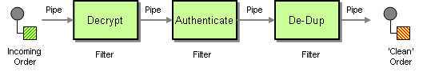

Beyond PSR-7
The magical middleware tour
Marco
Explorer
Avid learner
Chocolate Lover
Steve
Enjoys Travelling
Software Architectures
In a few years...
Software Engineers
Start of the Journey...
Everybody on its own
DRY Violation
$filename = 'log.txt';
$handle = fopen($filename, 'a'));
fwrite($handle, $errorMessage);
fclose($handle);
$filename = 'log.txt';
$handle = fopen($filename, 'a'));
fwrite($handle, $errorMessage);
fclose($handle);
Libraries
Include Hell
include 'config.php';
include_once 'dbcon.php';
include_once 'logger.php';
include 'utils.php';
include 'forms.php';
include 'calculations.php';
include 'graphs.php';
include 'auth.php';
IoC First Wave
MVC Frameworks
Same thing, different way...
Zend Framework
$logger = new Zend_Log();
$writer = new Zend_Log_Writer_Stream('php://output');
$logger->addWriter($writer);
$logger->log('Informational message', Zend_Log::INFO);
Symfony
// YAML Configuration
// [...]
sfContext::getInstance()->getLogger()->info('qmchenry was here');
Reinventing the Wheel
With a little help of...
IoC New Wave
Microframeworks
Logo Images
StackPHP
// Stack PHP Code
One issue to solve...
namespace Symfony\Component\HttpFoundation;
class Request {
public static function createFromGlobals(): Request {
return self::createRequestFromFactory($_GET, $_POST, [], $_COOKIE, $_FILES, $_SERVER);
}
}
namespace Zend\Http\PhpEnvironment;
class Request extends \Zend\Http\Request {
public function __construct() {
$this->setEnv(new Parameters($_ENV));
$this->setQuery(new Parameters($_GET));
$this->setPost(new Parameters($_POST));
$this->setCookies(new Parameters($_COOKIE));
$this->setFiles(new Parameters($this->mapPhpFiles()));
$this->setServer(new Parameters($_SERVER));
}
}
Need for
a good HTTP abstraction
PSR-7
PSR-7 GOALS
Interfaces
Practical applications and usability
No limits
Server and client
PSR-7 NON-GOALS
Conformation
Impose details
A Value object is forever
Pipes and filters
Decorator
interface Pizza
class Margherita implements Pizza
class CheeseDecoration implements Pizza
{
function __construct(Pizza $pizza)
}
class VegetablesDecoration implements Pizza
{
function __construct(Pizza $pizza)
}
$myFavouritePizza =
new VegatablesDecoration(
new CheeseDecoration(
new Margherita()
)
);
Middleware
Middleware
function (Request): Response
Request Response
Airport Metaphor
Middleware
function (Request request): Response
{
...
response = next(request);
...
return response;
}
Middleware
function (Request, Response): Response
Middleware
function (
Request request,
Response response,
callable next
): Response
PHP
Link/screenshot FIG discussion
Middleware
in Action
class Middleware
{
function __invoke($request, $response, $next)
{
if (!$this->preconditionsExist()) {
throw new RuntimeException();
}
$request = $this->doSomethingOnRequest();
$response = $next($request, $response);
return $this->doSomethingOnResponse($response);
}
}
class BasicAuthentication
{
function __invoke($request, $response, $next)
{
$authorization = $request->getHeaderLine('Authorization');
if ($this->checkUserPassword($authorization)) {
$request = self::setAttribute(
$request,
'USERNAME',
$authorization['username']
);
return $next($request, $response);
}
return $this->unauthorizedUserResponse();
}
}
class AccessLog
{
function __invoke($request, $response, $next)
{
if (!self::hasAttribute($request, 'CLIENT_IPS')) {
throw new RuntimeException();
}
$response = $next($request, $response);
$message = $this->formatter($request, $response);
$this->logger->log($message);
return $response;
}
}
Slim

Slim
// src/middleware.php
$app->add(new AccessLog($logger, $formatter));
$app->add(new Geolocate());
$app->add(new ClientIp());
$app->add(new BasicAuthentication($users));
Radar & relay
Radar
// web/index.php
$adr->middle($basicAuthentication);
$adr->middle(new ClientIp());
$adr->middle(new Geolocate());
$adr->middle($accessLog);
Expressive
Expressive
// config/autoload/middleware-pipeline.global.php
return [
'middleware-pipeline' => [
'basic_authentication' => [
'middleware' => new BasicAuthentication($users),
'priority' => 4000
],
'clientip' => [
'middleware' => ClientIp::class,
'priority' => 3000
],
'geolocate' => [
'middleware' => Geolocate::class,
'priority' => 2000
],
'access-log' => [
'middleware' => new AccessLog($logger, $formatter),
'priority' => 1000
]
]
];
The magical Expressive tour
// config/autoload/middleware-pipeline.global.php
return [
'middleware-pipeline' => [
'always' => [
'middleware' => [
Helper\ServerUrlMiddleware::class
], 'priority' => 10000
],
'routing' => [
'middleware' => [
ApplicationFactory::ROUTING_MIDDLEWARE,
Helper\UrlHelperMiddleware::class,
ApplicationFactory::DISPATCH_MIDDLEWARE
], 'priority' => 1
],
'error' => [
'middleware' => [], 'error' => true, 'priority' => -10000
]
]
];
Expressive/React
// config/autoload/middleware-pipeline.global.php
return [
'dependencies' => [
'factories' => [
React2Psr7\StaticFiles::class => React2Psr7\StaticFilesFactory::class,
]
],
'middleware_pipeline' => [
'static' => [
'middleware' => React2Psr7\StaticFiles::class,
'priority' => 100000, // Execute earliest!
],
...
]
];
Platforms
categorizzazione
Roundup
A good HTTP abstraction
Abstractions VS Implementations
Re-Inventing the Wheel is over
Runtime Dangers
Thank you very much
Resources
QR Code
Speakers love feedback
Leave feedback at https://joind.in/talk/1ccba
All you need is middleware
Credits
https://www.youtube.com/watch?v=0sazEDzCHAw -> plane view
https://en.wikipedia.org/wiki/Organic_chocolate -> choco
https://www.youtube.com/watch?v=O0LHUpTMiIw -> universe
hawaiian -> https://www.flickr.com/photos/keithallison/19019662724
hippie van -> https://de.wikipedia.org/wiki/VW_T1
mosque -> https://commons.wikimedia.org/wiki/File:Beautiful_Architecture_of_Faisal_Mosque.jpg
mess -> https://www.flickr.com/photos/orinrobertjohn/530322514
hippies -> https://en.wikipedia.org/wiki/Isle_of_Wight_Festival_1970
van2 -> https://en.wikipedia.org/wiki/Merry_Pranksters
students -> https://en.wikipedia.org/wiki/Student-centred_learning
rave -> https://www.youtube.com/watch?v=3aDthA9uGOY
reinventing wheel -> https://www.flickr.com/photos/thomasguest/5491482766
Board by ericfleming8
Abstract painting by Earle M. Pilgrim
.jpg){kind=link}
Figs by Mburnat
{kind=link}
Kungsleden by Shyguy24x7
{kind=link}
Danger zone by cvander
PSR-7 diagram by ninjagrl
Diamond by EWAR
Pizza by ElfQrin
Cheese and vegetables by StockSnap
Pizza by Scott bauer
{kind=link}
Onion by Colin
Onion by Amada44
{kind=link}
Cutting onion by Lali Masriera
Onion by darwinbell
Onion by costanzimarco
Onion by sarangib
Locked door by LEEROY.ca
Log by Greenpeace Finland
{kind=link}
Slim Narcissus by Cillas
Expressive seal by nutmeg66
Expressive dog by BambuArt
Expressive cat by Eduardo Simioni
Cat by SpechlessGiuly